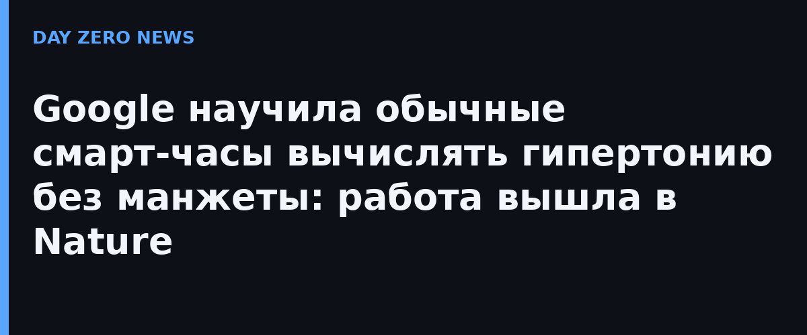

Классические тонометры измеряют мгновенные систолическое и диастолическое значения, которые легко искажаются шумом и настроением пациента. Google пошла другим путём: система AI-PPG-ACC-HTN не пытается угадать отдельное число, а агрегирует пассивные физиологические признаки за несколько дней и отвечает на вопрос «есть ли у человека устойчивое повышенное давление». Используется два штатных сенсора часов: оптический пульсовой (PPG) и акселерометр (ACC), улавливающий баллистокардиограмму — микровибрации запястья от выброса крови в аорту. Дополнительно модель учитывает рост человека как прокси длины артериального пути.
Базовое представление сигналов 1D-сверточная сеть получила методом самообучающегося контрастного предобучения на 492 347 часах размеченных данных PPG и акселерометра от 2 109 участников. Валидировали систему в проспективном многцентровом исследовании на пяти клинических площадках США: 196 добровольцев без сердечно-сосудистых заболеваний и без гипотензивных препаратов, эталон — 24-часовой суточный мониторинг давления (золотой стандарт). Результат первичного скрининга: специфичность 90,0%, положительная предсказательная способность 80,6%, чувствительность 65,8% против 55,3% и 77,8% у однократного офисного замера. На этапе подтверждения (для тех, у кого первичный скоринг повышен): PPV 96,7%, специфичность 90,9%, чувствительность 78,4% — уровень, сопоставимый с многодневным домашним мониторингом манжетой.
Сами авторы подчёркивают: это исследовательская, разведочная работа, часы не ставят диагноз и не заменяют клиническую манжету — задача системы «возможностного» скрининга мягко подтолкнуть человека с риском к нормальному обследованию. Выборка ограниченна здоровыми без лечения, так что на уже принимающих препараты пациентов выводы не распространяются. При этом findings уже легли в основу функции трендов артериального давления Health Guardian в приложении Google Health — о сроках широкого раскатывания компания не сообщила.
Работа опубликована 5 ноября в Nature (DOI 10.1038/s41586-026-11336-3), соавторы — клиницисты Beth Israel Deaconess Medical Center и Гарварда.